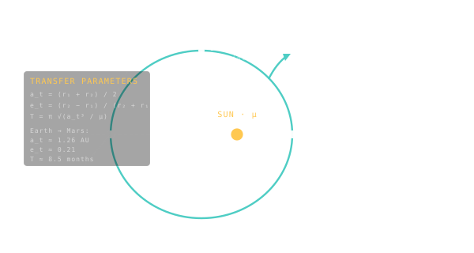

Transfer Ellipse
The Keplerian arc that carries a spacecraft from one orbit to another — Sun at one focus, just like every other orbit.

101 · zoom in
Mission planning sounds like it's about engines and rockets. It's mostly about choosing an ellipse. Every interplanetary cruise — Apollo to the Moon, Voyager to Neptune, Perseverance to Mars — is just a spacecraft riding an elliptical orbit between where it started and where it's going. The fancy word for that ellipse is the transfer orbit.
It plays by the same rules as every other Keplerian orbit. The Sun sits at one focus. The spacecraft moves slowly at the far end and quickly at the close end. Vis-viva still works to compute its speed. Kepler's third law still gives you the time-of-flight from the size. Nothing exotic.
The only thing that makes a transfer ellipse different from a planet's orbit is that the spacecraft only flies HALF of it. It hops on at one end, rides to the other, and gets off. That's why the ∆v budget always has two big burns — one to enter the ellipse, one to leave it. The middle bit, the eight-month coast, costs absolutely nothing.
Once you've burned out of Earth's orbit, you're on an ellipse around the Sun. That ellipse is the transfer orbit, and it has all the same properties as any other: semi-major axis, eccentricity, perihelion, aphelion. The fact that you're going somewhere doesn't change the geometry — gravity doesn't care about your destination.
Two anchors define a transfer ellipse: where you started (perihelion if you're going outward) and where you'll end up (aphelion). The semi-major axis is the average of those two radii. Tweak either anchor and the whole ellipse reshapes — go further out, the ellipse stretches, the trip gets longer.
On Orrery's `/fly` HUD you'll see the spacecraft trace this ellipse in real time. The transfer arc on screen is a visual rendering of the same conic that the math says it is — Sun at one focus, perihelion behind you, aphelion ahead.
SEE IN THE APP
- /fly The bright arc on /fly is the spacecraft's transfer ellipse